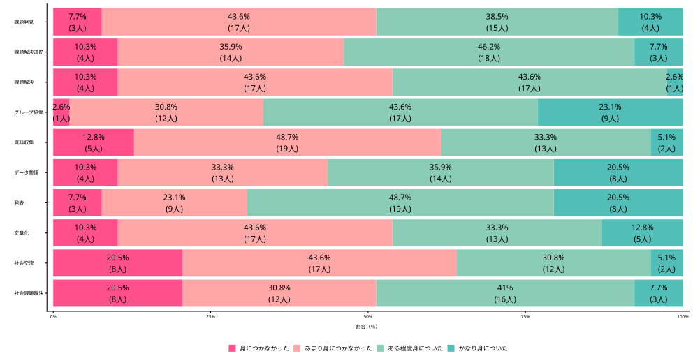
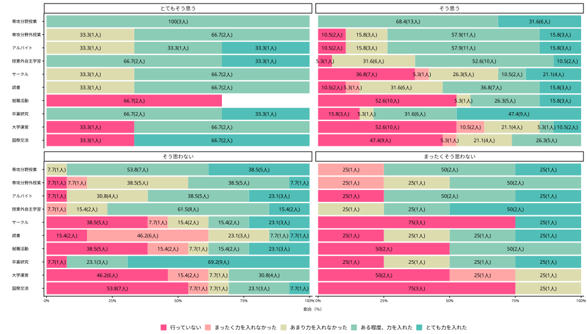

論点整理・コメント
探究学習と大学での学び
![]()
October 28, 2026
Ⅰ. はじめに
自己紹介
- 専門：政治学 > 政治思想史
- 18世紀イギリス議会政治の発展と変容：レトリック受容と新興メディア
- 所属：金沢大学 高大接続コア・センター; 高大連携歴史教育研究会
センターでの企画・業務
- 高大接続リーディング・セミナー; 本で拓く探究ワークショップ; 高大接続ラウンドテーブル; 高大接続に関わる追跡調査 1
その他
- 前任校（公共政策系）において「PBL（問題解決型学習）」や初年次教育に長く携わる
探究をめぐる、私が経験したモヤモヤ
- あるワークショップでの高校の先生
- 「生徒が、私にも読めないような分厚い本をしっかり読んで探究学習に取り組んでいる。見方によっては本をまとめているだけに見えるが、簡単なことを行なっているようにはとても思えない。華々しい実験だけが評価されるのはおかしいのではないか」
- あるワークショップでの生徒
- 「大人が解決できないような問題を、高校生が解決できるわけないよね笑」
- ポスターセッションにおいて他校の生徒に質問する高校の先生
- 「先行研究がもうあるんじゃないの？」
問題の所在
- 高校と大学の埋めがたいギャップ：「教育接続」問題
- 探究学習の文脈において、高大接続は案外、論じられない
- 中教審 生活、総合学習・探究WG（2025-26）; 東京学芸大学 高校探究プロジェクトニュースレター; 溝上 （2026）; 酒井 （2026）; Cf. 日本学術会議 （2023）
- 例外：IDE大学東海支部セミナー「 「探究」と「研究」は、なにが異なり、どのようにつながるのか：高校教育における探究学習と大学教育の接続」（2026年8月開催）
- 探究学習の「研究」化（高橋 （2020））
- 2020年になされた指摘（警告）が依然、放置されている
- 探究で頑張った生徒は、大学でも頑張る、は検証を要する仮説（願望？）
- 探究学習の経験は大学でどう活きるのか（プレゼンテーション能力など、目に見えやすいアカデミック・スキルだけ？）
大学4年次3月時点での意識調査：探究活動で育成された資質・能力
- 令和4年（2022年）入学者対象（回答率：3.2％）

大学4年次3月時点での意識調査：探究学習に熱心に取り組みましたか？ × 大学生活の中で、どのくらい力を入れてきましたか

問題の所在 > 高大接続の難しさ
学校と社会をつなぐ調査（通称：10年トランジション調査、河合塾）
- 学習や成長に対するマインドセットやキャリア意識は高校までに形成されており、大学で後から変えることは容易ではない
高校の先生方が「大学受験が一番大事」「いろいろ我慢しても、大学にとにかく入れ」「大学に入ったら好きなことをして」と言うことが駄目だという話を実証的に示すために、この調査〔「10年トランジション調査」〕を始めたわけです。たくさん我慢して大学生になっても、それまでにしてこなかったことは大学生になってもできない。大学でいろいろと育てようと思っても、学生自身にその意欲がないのです。そういうマインドセットは、高校までにしっかりと出来上がっていて、キャリア意識も大きいです。自分が成長しようと端から思っていない（溝上 （2023, p. 38））。
問題の所在 > 探究学習の「研究」化
学会発表，論文執筆，論文投稿，コンテスト入賞など，推薦入試で求められる探究学習の内容は，学習指導要領の内容を遥かに超える（高橋 （2020, p. 42））。
先端的な科学研究，学会発表や論文執筆は，本来大学教育で行う内容ではないかという疑問も残る。「探究」ではなく「研究」が行われるようになり，それを“獲得ポイント”として，大学に進学するという道筋は，自己の方向性を見つめ，社会との関わりを見出す発達段階にある高校生にとって果たして適切な教育なのだろうか（高橋 （2020, p. 42））。
多忙な中で，対応しきれないと「総合的な学習の時間」のように形式的な対応を取ったり，探究学習を“外注”したりする場合には，高校生の教育活動としての探究学習は後退していくであろう（高橋 （2020, p. 42））。1
Ⅱ. コメント
附属高校
aa
錦丘高校
- 探究未来課の設置
- 探究活動 + キャリア教育 + 図書館運営
- 何を「良い探究」と評価するか
- 陥りやすい見方：入賞・メディア掲載が「よい探究に見える」
- 本来見たいもの：プロセスで身についた力
- プロセスで身についた力の可視化と振り返り
- 振り返りの言語化を支援することも（こそ？）、教師の支援を要する？（Cf. 木村 他 （2022））
Ⅲ. 論点
論点
Q1. 高校の探究で育った力は、大学のどのような場面で表れるのか
Q2. 主体性などの非認知能力の評価に、大学の専門性をどう生かせるか
Q3. 高校で生まれた問いや未完成の探究を、大学でどう深められるか
Q4. 高校が大学に期待していることは何か
「学びの転換」論
高校で学んできた事柄をいったんほどき、そのある部分を使いつつ、新たに継続したりしながら必要に合わせて再構築する(松下 （2010, p. 11）) 。
引用文献
引用文献
Thompson, M., Pawson, C., & Evans, B. (2021). Navigating Entry into Higher Education: The Transition to Independent Learning and Living. Journal of Further and Higher Education, 45(10), 1398–1410. https://doi.org/10.1080/0309877x.2021.1933400
岡田 航平（2025）．なぜ当事者視点で高校と大学の関係性を描くことが必要なのか？ 京都大学大学院教育学研究科紀要，71, 113–126. https://repository.kulib.kyoto-u.ac.jp/items/830d229e-4359-4c87-8e3a-56de5a165d24
苅谷 千尋・田中 千晶・中野 正俊（2026）．高校在学中の「学びの転換」的経験が成長実感に与える影響：高大接続プログラムの取り組みと追跡調査 大学入試研究ジャーナル，36, 23–30. https://doi.org/10.57513/dncjournal.36.0_23
木村 竜也・寺西 望・伊藤 大輔（2022）．PBLに基づいた「総合的な探究の時間」における生徒の振り返りの検討 日本教育工学会研究報告集，2022(4), 134–141. https://doi.org/10.15077/jsetstudy.2022.4_134
酒井 淳平（2026）．誤解だらけの探究学習：「手応えがない」ときの25のヒント 明治図書
高橋 亜希子（2020）．新高校学習指導要領と探究学習 : 難関大学への別ルートになりつつある探究学習 アカデミア. 人文・自然科学編，19, 31–43. https://doi.org/10.15119/00002855
西岡 加名恵・大貫 守（2020）．スーパーサイエンスハイスクール8校の連携による「標準ルーブリック」開発の試み 教育方法の探究，23, 1–12. https://doi.org/10.14989/250860
日本学術会議 心理学・教育学委員会高大接続を考える分科会（2023）．【報告】 日本における高大接続の課題：「セグメント化」している現状を踏まえて 日本学術会議
松下 佳代（2010）．大学における「学びの転換」とは：unlearn概念による検討 東北大学高等教育開発推進センター（編）大学における「学びの転換」と学士課程教育の将来（pp. 5–15） 東北大学出版会
溝上 慎一（2023）．トランジション実現のための影響の大きな高校・大学での学びを理論的、実証的に示す 2020年代を通じて実現すべき高大連携：生徒・学生が『持続可能な社会の創り手』 となるために 京都高大連携研究協議会
溝上 慎一（2026）．課題の設定から始める総合的な探究：己の在り方生き方を育てる理論と実践 学びと成長の講話シリーズ 東信堂